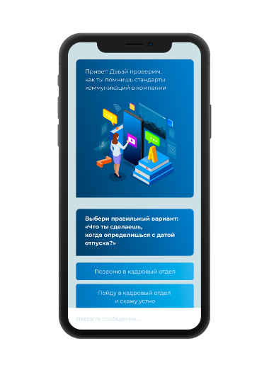
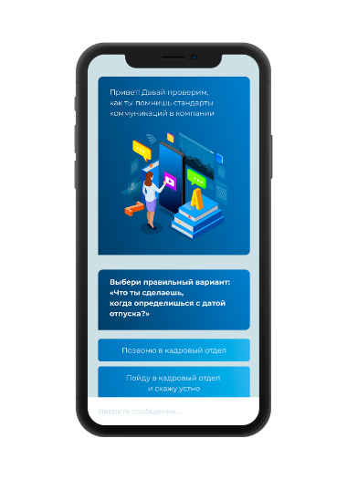
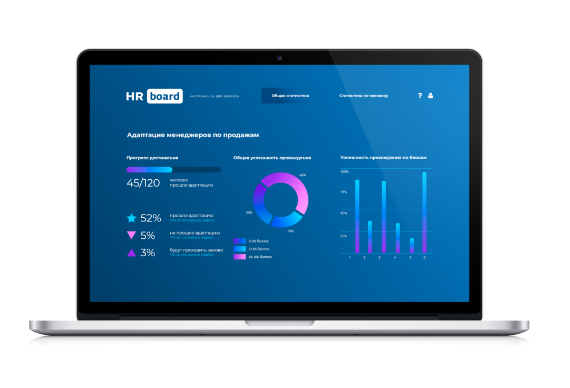
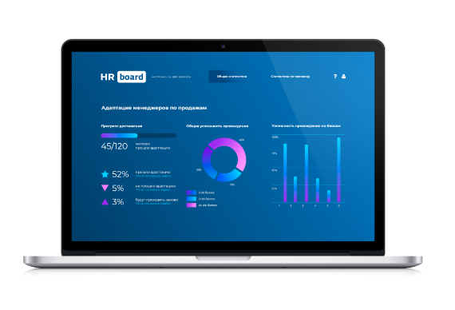
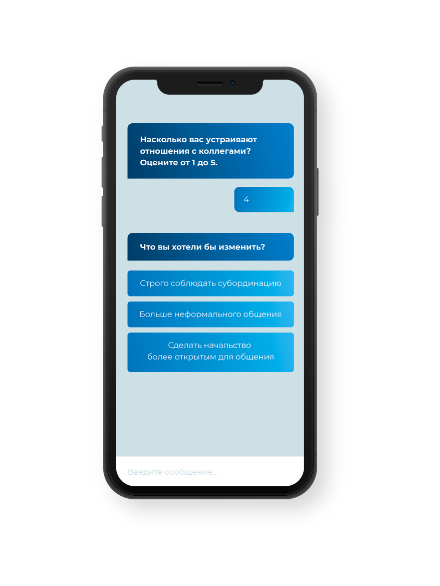
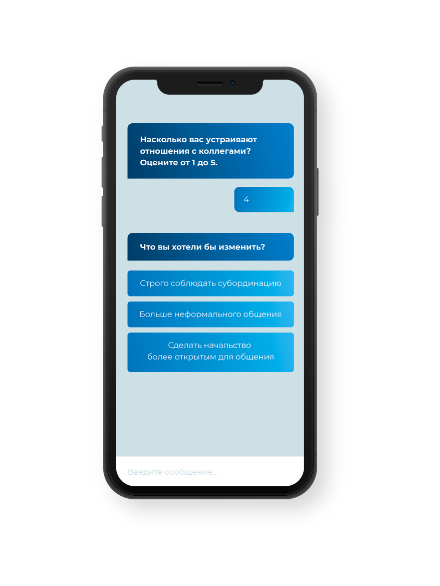

инструменты для бизнеса
Все задачи HR
на единой
диджитал-платформе
Управление HR из одной точки: подбор, адаптация, обучение, мотивация и контроль. Сопровождение персонала с помощью системы чат-ботов и интеграции с другими сервисами. Сопровождение персонала с помощью системы чат-ботов и интеграции с другими сервисами


МИНИМИЗАЦИЯ
РЕСУРСОВ
Система HR Board автоматизирует важные этапы работы с персоналом: подбор, адаптацию, обучение, мотивацию и контроль. За счет этого компания экономит временные и финансовые ресурсы
ПОВЫШЕНИЕ
КАЧЕСТВА
СОТРУДНИКОВ
HR Board интегрируется с чат-ботами, соцсетями, СДО, CRM и другими системами. Сотрудники получают удобную коммуникацию с компанией — это вовлекает их в непрерывное обучение и повышает уровень корпоративной культуры
ВОЗМОЖНОСТИ
УМНАЯ СИСТЕМА ЧАТ-БОТОВ
Мы настраиваем алгоритмы и сценарии коммуникаций с чат-ботами исходя из задач заказчика. Администратор управляет процессом и контролирует результаты с помощью административной панели.
ИНТЕГРАЦИЯ С 1С
HR Board собирает ключевые данные из 1С, CRM и других автоматизированных сервисов. Это экономит время и благодаря наглядной аналитике повышает эффективность решений.
СИСТЕМА ДИСТАНЦИОННОГО ОБРАЗОВАНИЯ
Интеграция с СДО позволяет настроить вовлекающую систему обучения для разных категорий сотрудников. Мы подключаем чат-ботов, разрабатываем геймификацию и создаем интерактивную систему рейтингов.
ВИЗУАЛЬНАЯ АНАЛИТИКА
Одно из ключевых преимуществ HR Board — гибкая настройка визуальной аналитики. Все данные подключенных сервисов и результаты взаимодействия с сотрудниками отображаются в онлайн-режиме.
 

 

 


Смотреть другие статьи

Виталий Лиханов
Кому в регионах платят больше сотки: истории тех, кто не переехал в Москву